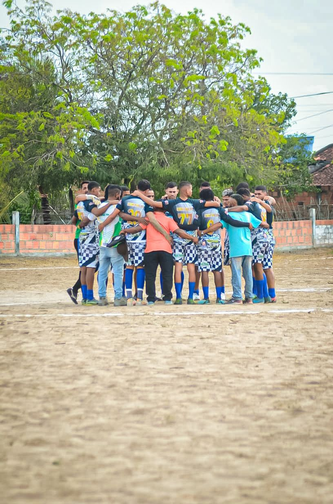
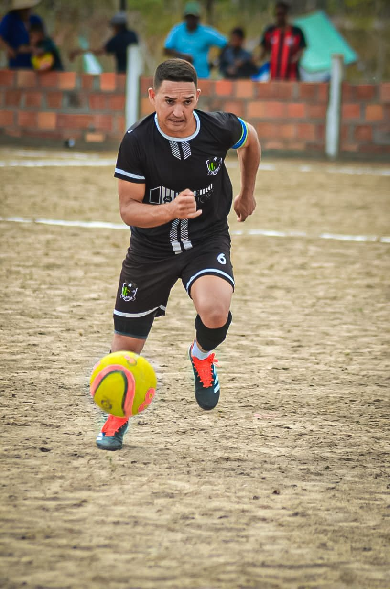
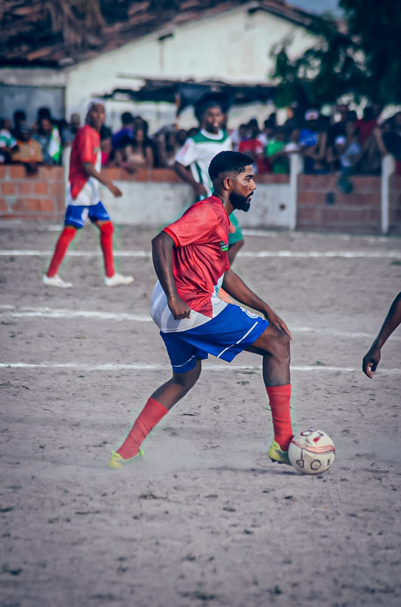
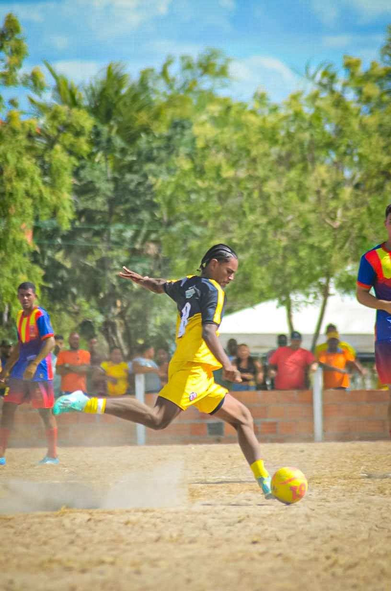
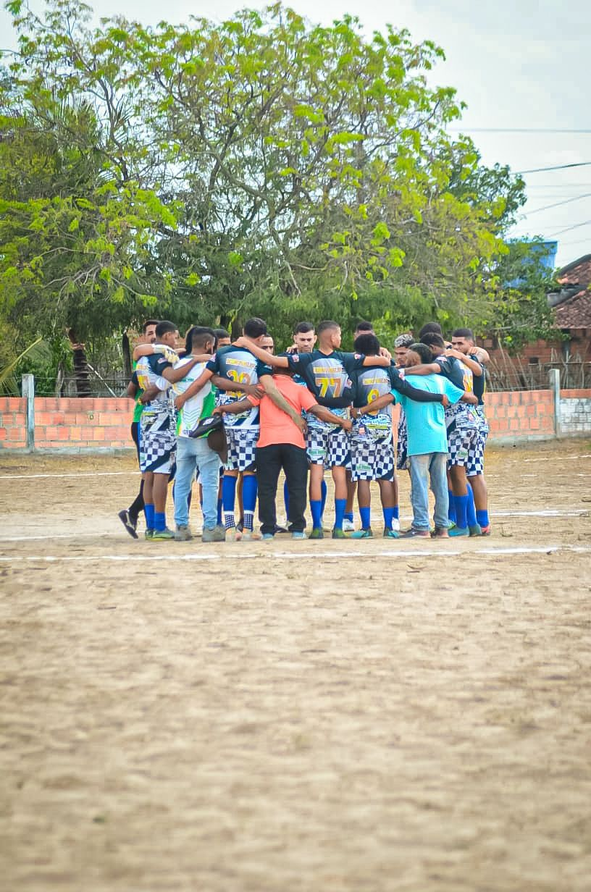
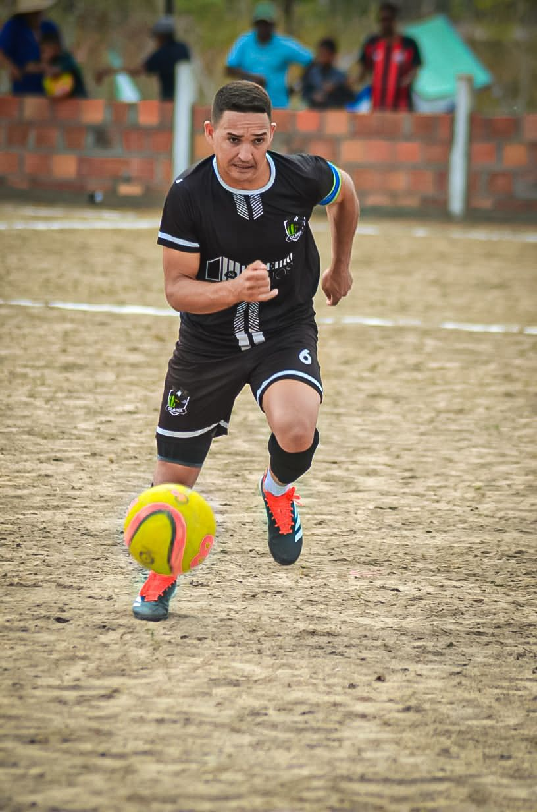
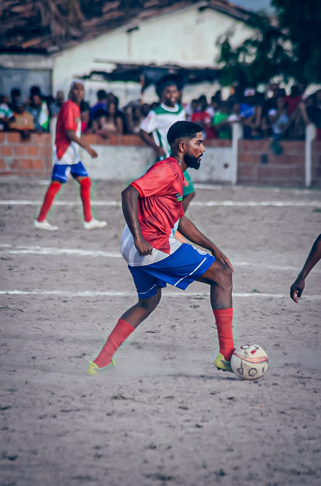
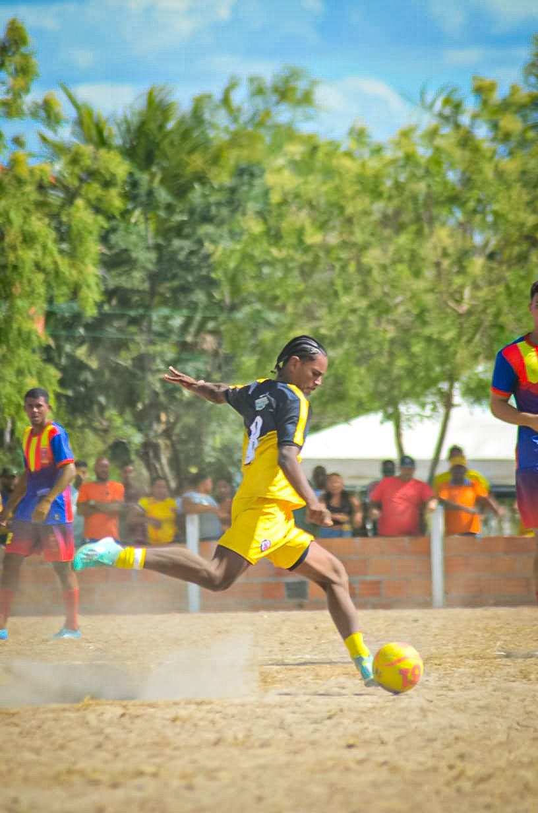
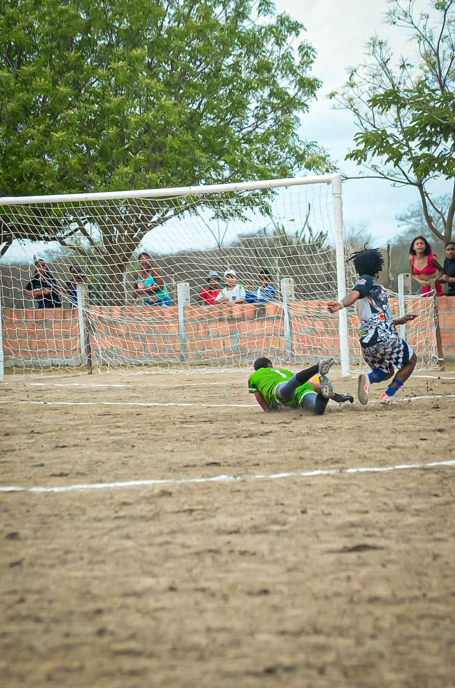
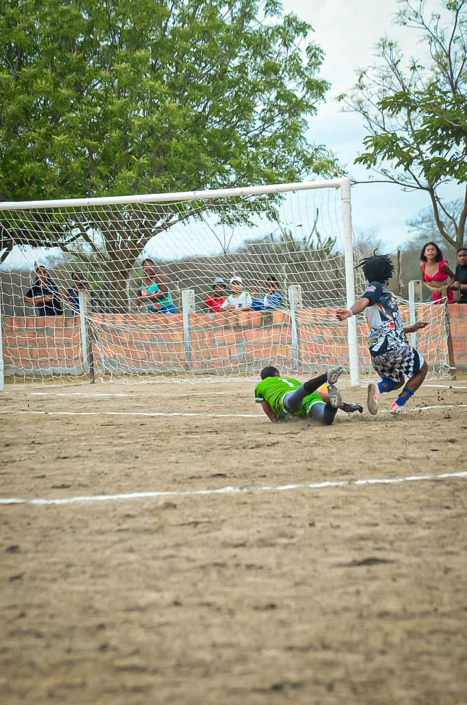

 

Esporte, Cultura e Comunidade em Movimento
O Festival Bolaverdão é uma iniciativa esportiva e sociocultural que utiliza o futebol amador como instrumento de integração comunitária, promoção da saúde e valorização da identidade local. Realizado pelo Clube dos Tenistas da Bahia (CTB) com incentivo da Lei de Incentivo ao Esporte, promove o fortalecimento de vínculos sociais e culturais em Teofilândia (Bahia).
Realizar o Festival Bolaverdão 2025/2026, fomentando o esporte, a educação e a cidadania através da prática do futebol amador e ações educativas temáticas.
O Bolaverdão resgata tradições do futebol amador e estimula a integração entre gerações, escolas e comunidades. Em regiões rurais e periféricas, onde há escassez de atividades esportivas, o projeto se destaca como importante agente de inclusão, cultura e cidadania.
O projeto contribui diretamente para os ODS da ONU — Saúde, Educação, Igualdade, Redução de Desigualdades e Paz — e deixa legado duradouro em infraestrutura esportiva e capital humano.
Entre em contato com o CTB para informações, parcerias e imprensa.
Email: contato@ctb-ba.com.br
Telefone: (71) 98530-4903